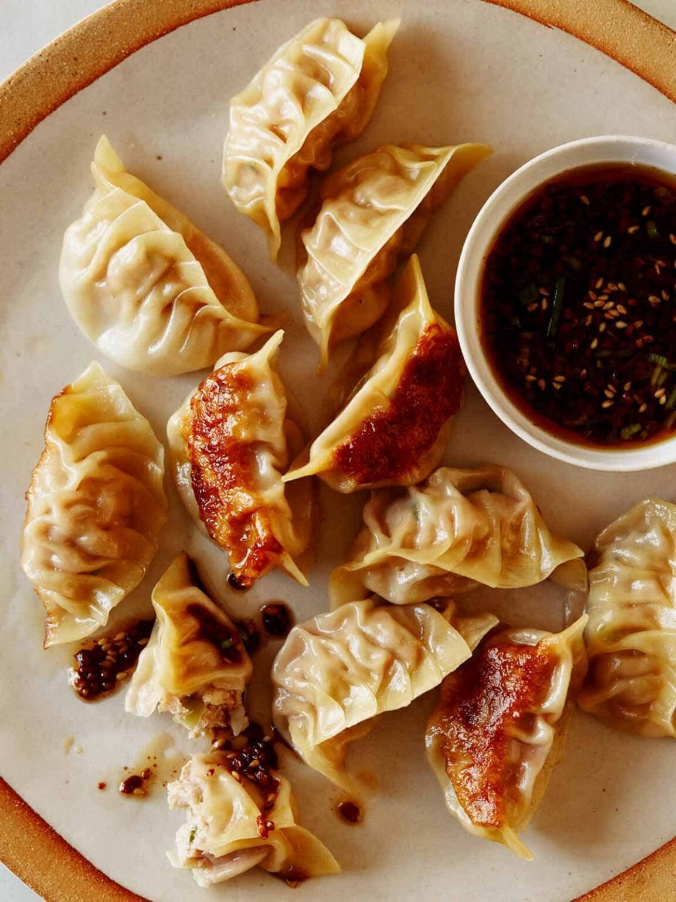

Potstickers

Description
Postickers are crunchy, moist, savory, and delicious all at once. Although it may take
some time to individually wrap each one, the reward is well worth the effort. Within each
dumpling there is a pork and vegetable filling that bursts with flavor.
Ingredients
- 1lb ground pork
- dumpling wrapper
- 3 cabbage leaves
- ginger
- 3 cloves of garlic
- 3 green onions
- sugar
- soy sauce
Steps
- finely chop cabbage, green onions, garlic and place into bowl
- add 1/4 tbsp sugar, 1/2 tbsp soy sauce to bowl
- grind square inch knob of ginger into bowl
- add salt and pork and mix thoroughly with hands
- wrap each wrapper with small pinch of filling
- pan fry in olive oil and once crispy add water and lid to steam
- can freeze extras